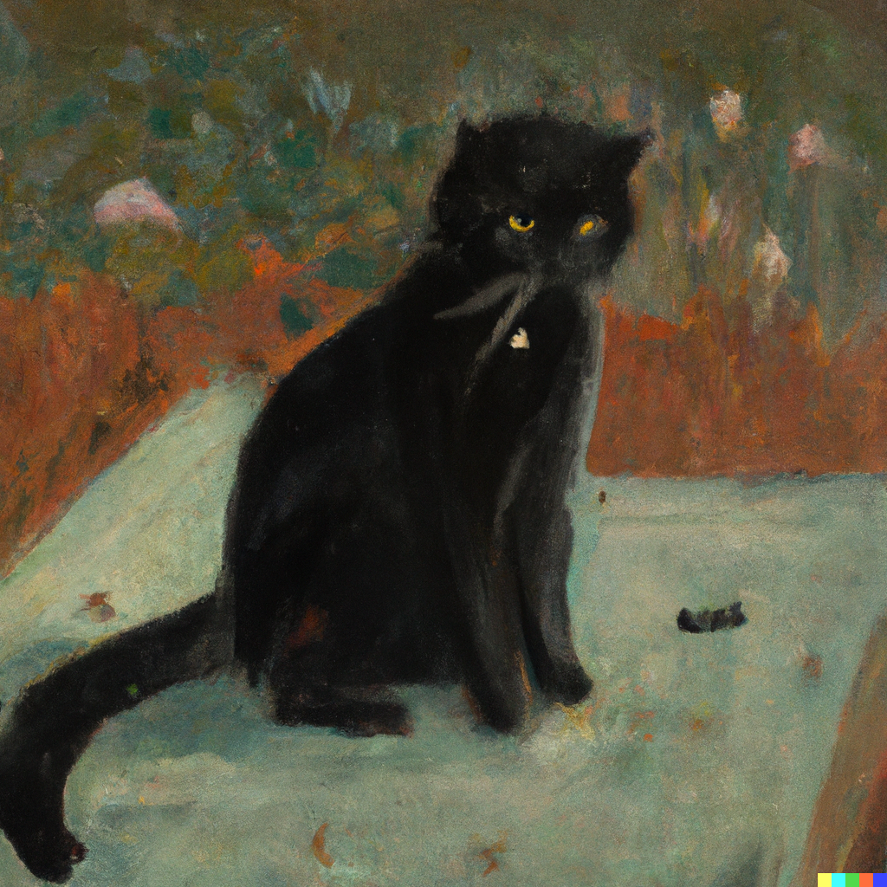

"As many of you witches know, forming a contract with your animal is very important. Not only are they your little helpers but they are also your friends as well," The teacher writes down on the blackboard the steps of how to form a contract with an animal. "Depending on which animal you form a contract with, you will get different talents. Of course you can form contracts with more than one animal but since you're young witches, it is better to start and keep one until you are more independent witches."
The teacher brought his hands to pick up and hold his cat, showing the cat off to us, "Black cats are very common animals for witches to form contracts with. They will help gather small animals for your potions, spells, and whatnot." Mary begins to think about what type of animal she would want to form a contract with, of course this depends on what she would want to do as a witch but they are all cute to her. Maybe a cat was perfect for her since she wants to have a small garden in the future and having someone help her get rid of creatures that will eat her plants will be helpful.
"You all may ponder over it over the weekend and give me answers on Monday so the academy can help prepare the animals for everyone." The teacher says and continues with his lecture about the different types of animals and the uses for each.
| Beginning | Go To Lunch |Next Day |